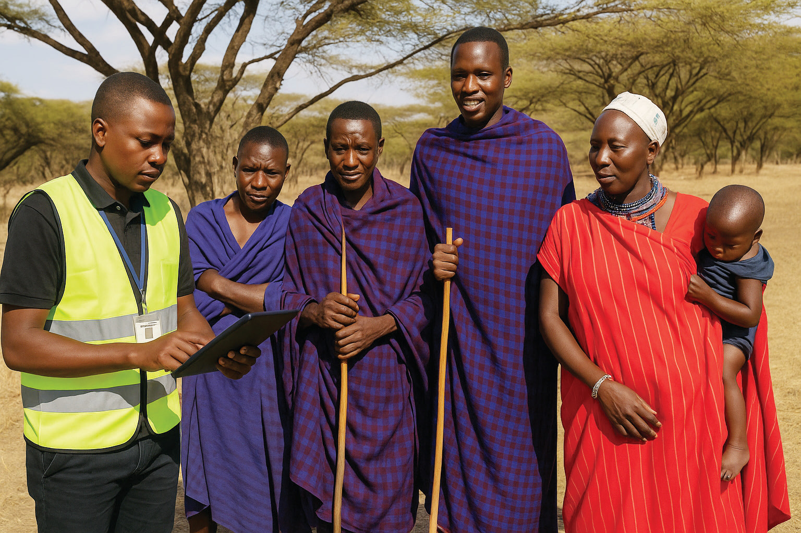
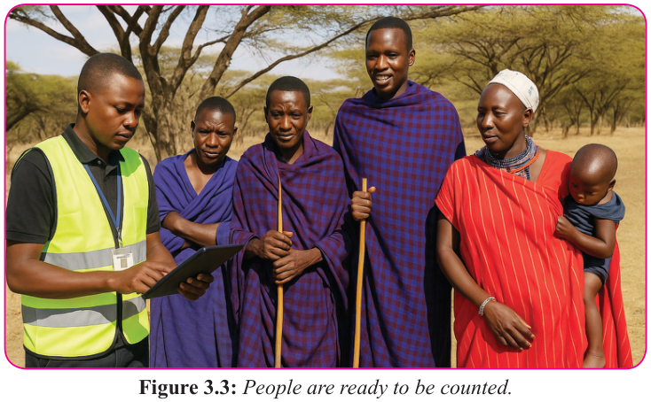

Form Two
Tanzania Institute of Education (TIE)
Bible Knowledge
51


Figure 3.3: People are ready to be counted.
Exercise 3.3
1. “Census is essential for development of the society.” Verify the truth of this
statement by exploring the importance of census in the society.
2. Asses the importance of agricultural census to the society’s development.
3. Examine the Church’s use of census and statistics in her mission

In summary, the book of Numbers provides a compelling example of how census should be conducted in our communities and provides valuable insights regarding how data collection and reporting were executed in a biblical context. From the detailed census to the specific records of offerings and gifts, the practices recorded in this book highlight the importance of accuracy, transparency, and accountability. The meticulous record-keeping reflects a dedication to thoroughness and precision that ensures that community is orderly functioning and resources are fairly distributed.
These timeless principles offer valuable lessons to the contemporary demographic
-oriented practices.
Activity 3.8
Visit a Ward Office in your locality, and talk to a Ward Executive Officer about the way statistics, census, and data are stored and used in the ward.